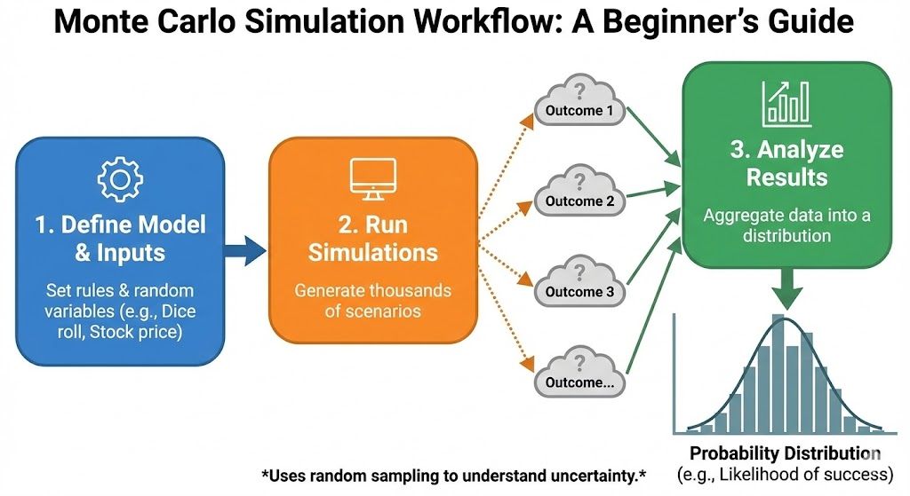
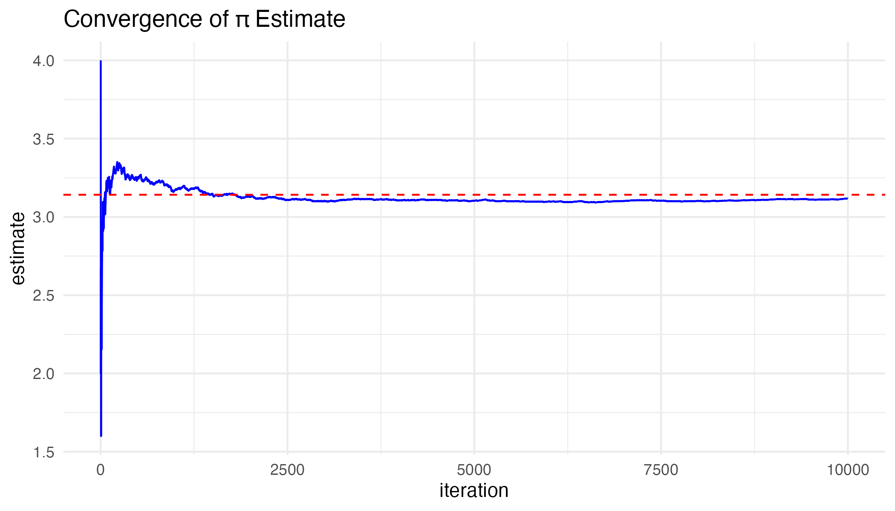
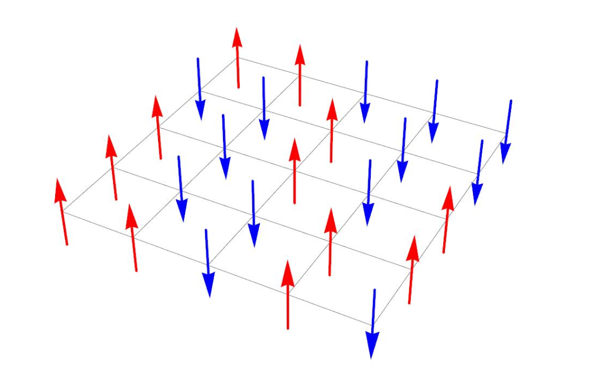

Phillip Gurevich, Aakash Sriram, Aashish Krishnan, Soome (Katie) Pyo
Published
December 11, 2025
1 Introduction
Monte Carlo simulation is a computational technique that uses repeated random sampling to approximate unknown quantities. Instead of relying on closed-form analytical solutions, Monte Carlo methods approximate expectations, integrals, probabilities, and distributions by simulating a large number of random draws and summarizing the results.
Monte Carlo methods are widely used because:
many statistical quantities (expectations, variances, probabilities) have no simple closed-form expressions
modern models (e.g., high-dimensional, nonlinear, or stochastic systems) are analytically intractable
simulation-based estimates converge to true values as the number of samples increases (by the Law of Large Numbers)
Monte Carlo methods naturally quantify uncertainty and sampling variability
This vignette demonstrates two core Monte Carlo ideas:
Estimating pi with uniform random sampling, and
Gibbs sampling for estimating distributions in a graphical model.
Throughout, we highlight the basic Monte Carlo workflow:
simulate → evaluate → average → converge.
2 Monte Carlo Workflow
A typical Monte Carlo simulation follows four steps:
Random Input — draw samples from a known distribution (e.g., normal, uniform).
Sampling — generate many independent random draws.
Evaluate Function — apply a function or rule to each sample (indicator, transformation, payoff, etc.).
Average Output — compute an average to approximate the true expectation or probability of interest.

Monte Carlo workflow diagram
3 Estimating pi Using Monte Carlo Simulation
3.1 Geometric Setup
We consider points drawn uniformly from the square ([-1,1]^2) (area = 4).
A point lies inside the unit circle if
\[
x^2 + y^2 \le 1.
\]
Because the circle has area \(\pi\), we have
\[
P(\text{inside circle}) = \frac{\pi}{4}.
\]
For \(n\) simulated points, a Monte Carlo estimator of \(\pi\) is
As \(n\) increases, \(\hat{\pi}\) should converge toward the true value of \(\pi\).
3.2 Simulation Code
Below is a simple R function to estimate pi using Monte Carlo simulation.
Code
set.seed(197) # for reproducibilityestimate_pi <-function(n) {# Draw n points uniformly from the square [-1, 1] x [-1, 1] x <-runif(n, -1, 1) y <-runif(n, -1, 1)# Check whether each point falls inside the unit circle inside <- (x^2+ y^2) <=1# Monte Carlo estimate of pi4*mean(inside)}# Try a few sample sizesestimate_pi(100)
[1] 3.08
Code
estimate_pi(1000)
[1] 3.092
Code
estimate_pi(100000)
[1] 3.14428
3.3 Visual: Sampled Points
The following figure shows randomly sampled points, colored by whether they fall inside the circle (blue) or outside (red).
Monte Carlo scatterplot for \(\pi\) estimation
This picture illustrates the geometry of the method: the fraction of points inside the circle approaches \(\pi/4\).
3.4 Visual: Convergence of \(\hat{\pi}\)

Convergence plot for \(\pi\) estimation
Early estimates fluctuate heavily due to randomness, but as the number of points grows, the estimates stabilize around the true value of \(\pi\). This behavior is a direct consequence of the Law of Large Numbers:
Each individual point is noisy and uninformative on its own. However, the average behavior of many points reveals the underlying quantity we care about. This is the key idea behind Monte Carlo methods: randomness, when aggregated correctly, uncovers structure.
The same simulate–evaluate–average–converge workflow generalizes to many other problems, including Bayesian inference, physical systems, and complex probabilistic models.
4 Gibbs Sampling (Markov Chain Monte Carlo)
4.1 What Is Gibbs Sampling?
Gibbs sampling is a type of Markov Chain Monte Carlo (MCMC) method. It is used when:
we want to sample from a joint distribution \[(p(x_1, \dots, x_d)\], but
direct sampling is difficult or impossible, while
the conditional distributions \[(p(x_i \mid x_{-i}))\] are known or easy to sample from.
Gibbs sampling constructs a Markov chain whose stationary distribution is the target joint distribution. By simulating this chain and collecting samples, we can approximate probabilities and expectations.
4.2 Graph Setup
Consider a directed graph with four binary vertices (a, b, c, d).
Each vertex can take values \[(\pm 1) \], and edges encode parent–child relationships.
Simple directed graph example
We assume we know probabilities such as
(P(+d +b, +c) = 0.3)
(P(+d +b, -c) = 0.1)
(P(+d -b, +c) = 0.2)
(P(+d -b, -c) = 0.9)
and similarly for (a, b, c).
These conditional probabilities define a joint distribution over the four nodes.
4.3 One Gibbs Sampling Step
A single Gibbs update proceeds as follows:
Choose a vertex (say (c)).
Condition on the current states of all the other vertices.
Sample a new state for (c) from its conditional distribution, e.g.
(P(+c +a) = 0.7).
Replace the old value of (c) with the newly sampled one.
Repeating this process for each vertex in turn gives one full Gibbs sweep over the graph.
After many sweeps, the sequence of states behaves like samples from the joint distribution.
4.4 Estimating Probabilities from Gibbs Samples
Once we have a long run of Gibbs samples, we can estimate quantities like
\[
P(+x) = \frac{\#\{\text{samples with } x = +1\}}{N},
\]
where (N) is the number of (post–burn-in) samples.
By the Law of Large Numbers, these empirical frequencies converge to the true probabilities as (N ). ## Practical Issues: Burn-In and Convergence
The Markov chain is usually initialized at an arbitrary starting state.
Early samples can be heavily influenced by this starting point.
To reduce this bias, we discard the first (B) iterations as a burn-in period.
Even after burn-in, samples are correlated in time, so assessing convergence and effective sample size is a key practical aspect of MCMC.
Gibbs sampling shines when the state space is large and structured (e.g., networks, grids, spatial models) and when conditional distributions are simple even if the joint is not.
5 Real-World Application: The Ising Model

Ising model example
The Ising model is a simple model from statistical physics for studying how particles or atoms “align” with their neighbors. We have a lattice of particles, each with a spin of either (+1) (up) or (-1) (down). The energy of the system depends on how many neighboring spins agree or disagree.
As the lattice size increases, the number of possible spin configurations grows exponentially, making direct sampling from the distribution impossible.
Gibbs sampling provides a feasible way to explore typical configurations of the lattice:
condition on the current configuration of neighbors
resample the spin of a single site according to its conditional probability
sweep through all sites repeatedly
Over many iterations, the Gibbs sampler can approximate the equilibrium behavior of the system under different temperature or interaction settings.
6 Conclusion
Monte Carlo methods provide powerful tools for approximating expectations and distributions when analytic solutions are unavailable. In this vignette we:
used Monte Carlo simulation to estimate () via random points in a square
illustrated how estimates converge as the number of samples grows
introduced Gibbs sampling as an MCMC method for sampling from complex joint distributions
connected Gibbs sampling to real-world systems like the Ising model
The common pattern is:
simulate random inputs → evaluate a function → average → assess convergence.
This workflow appears across statistics, Bayesian inference, physics, machine learning, and many other fields.